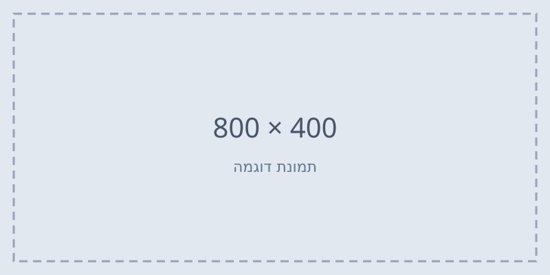

איך למדתי לתכנת בגיל 35
מאת דנה כהן · · זמן קריאה: 6 דקות
לפני שנתיים לא ידעתי מה זה HTML.
היום אני בונה אתרים. זה הסיפור של הדרך.
ההתחלה
הכול התחיל כשניסיתי לשנות משהו קטן באתר של העסק ולא הצלחתי. במקום להתקשר למישהו, החלטתי להבין.
הקושי הראשון
הדבר שהכי הפיל אותי היה נתיבים יחסיים.
לקח לי שבוע להבין מה זה ../.

שאלות שאני מקבלת
כמה זמן זה לוקח?
בקצב של 10 שעות בשבוע, כחצי שנה עד לפרויקט ראשון אמיתי.
צריך רקע במתמטיקה?
לא. חשיבה לוגית מספיקה לחלוטין לפיתוח צד לקוח.
מאיפה מתחילים?
מ-HTML. תמיד מ-HTML.
<details> <summary>